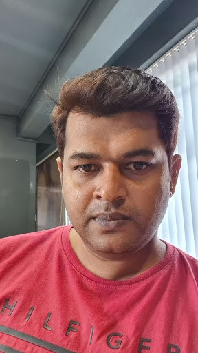

|  | Vibhav Parameswara CharyContact: 7022045947Address: Sarjapur Road, Bangalore Date of Birth: 12th May 1981 E-Mail: vibhav.achar@gmail.com |
Design, build, measure,track&maintain a scalable infra/application with an uptime of 99.99% with minimum security vulnerabilities. Hands-On with specialties in Kubernetes, Terraform, Gitlab CI/CD, Linux, Observability, Logging,AWS, DevOps/SRE Tools & Processes, Incident, Problem, Change Management, Project Management, Cloud Migrations, Cost, Database Migrations, CloudMongo, Kong API Gateway
| Organization | Time-Period | Designation |
| Niyo | 2019 - Current | Senior Director Of Engineering |